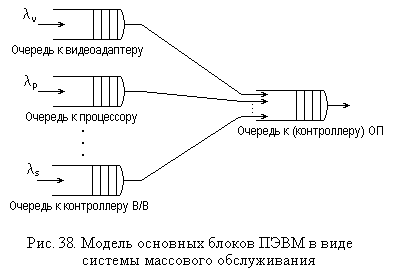
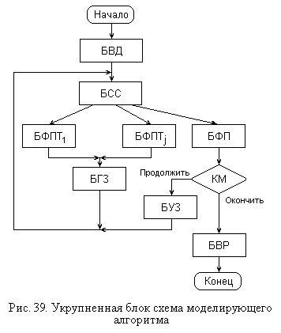

4.1. Методы оценки временных характеристик ЗУ
4.1.1. Экспериментальные методы оценкиДля решения задач исследования систем памяти, анализа их характеристик используют тот же спектр методов, который применяется и к ЭВМ в целом. Эти методы разделяются на два больших класса: экспериментальные и теоретические. К первым относятся различные тестовые и измерительные программы, ко вторым - различные математические модели, связанные с применением аналитических и численных методов и методов статистического (имитационного) моделирования.
Обе группы методов, как правило, предназначены для получения оценок временных характеристик и производительности системы памяти, а также изучения влияния на эти характеристики различных параметров системы.
4.1.1. Экспериментальные методы оценки
Экспериментальные методы широко используются не только для оценки производительности ЭВМ и систем и, в частности, для оценки их памяти.
Суть экспериментальных методов сводится к измерению той или иной характеристики действующей ЭВМ при выполнении на ней какой-либо работы (решении задачи или набора задач). Эти методы позволяют получить непосредственные значения интересующих величин с относительно малыми затратами, так как время измерения обычно невелико (от нескольких секунд до нескольких часов).
Используя экспериментальные методы, следует учитывать, что процесс вычислений на ЭВМ имеет скорее стохастический, чем детерминированный характер (в отдельной ЭВМ - это псевдослучайный процесс, а в сервере, обслуживающем различных клиентов - уже чисто случайный) и получаемые результаты измерений представляют собой либо отдельные реализации случайной величины, либо некоторые усредненные значения.
Поэтому, при относительной простоте и дешевизне этих методов,
точность полученных оценок будет определяться
- во-первых, степенью приближенности
выполняемой при измерениях вычислительной работы к реальной нагрузке ЭВМ при
ее эксплуатации или, как иначе говорят, репрезентативностью измерительной нагрузки;
- а во-вторых, количеством реализаций (прогонов) выполняемой задачи или теста,
по которому производится усреднение оценки.
С точки зрения характера вычислительной нагрузки, используемой для измерения интересующих характеристик, можно избрать один из следующих подходов: а) использовать в качестве такой нагрузки реальную задачу, которая будет решаться на ЭВМ; б) написать собственную программу, характер операций в которой близок к желаемому; в) использовать некоторую стандартную задачу или тестовую программу. Каждый из этих путей имеет свои достоинства и недостатки.
В первом случае выполняемая ЭВМ работа наиболее близка к действительной, однако, во-первых, довольно редко предполагается использовать ЭВМ для одной задачи или узкого круга задач, а во-вторых, необходимо каким-либо образом измерить интересующую характеристику в процессе решения задачи. Это может потребовать значительных усилий или быть вообще нереализуемо. Ведь если речь идет о готовой (купленной) программе и измеряться должно не общее время ее решения, а, например, время выполнения операций по обмену данными с жестким диском, то выполнение соответствующих измерений может оказаться невыполнимым или неоправданно дорогим.
Написание собственной измерительной программы представляется целесообразным только в тех случаях, когда это либо имеет некоторые очевидные преимущества перед существующими, в частности возможность получения каких-нибудь специальных характеристик, либо когда особенности вычислительных процессов, для которых требуется провести измерения настолько специфичны, что имеющиеся программы не отображают их адекватно. Кроме того, написание подобных программ обычно предполагает достаточно высокую квалификацию программиста, его умение программировать на низком уровне.
Стандартные тестовые программы (более точно название программы для оценки производительности, или benchmark programs/utilities, так как тестирование обычно предполагает просто проверку работоспособности) являются наиболее распространенным вариантом получения характеристик производительности для типовых применений ЭВМ, в особенности для сравнения различных моделей ЭВМ одного класса или близких классов. В частности, такие программы широко используются для оценки характеристик ПЭВМ. Однако общий характер таких программ делает их оценки не слишком близкими к конкретной ситуации. При этом возможны следующие разновидности таких программ:
- программы, оценивающие временные характеристики отдельно взятых устройств памяти, чаще всего, кэш-памяти, оперативной памяти и жестких дисков на основе измерения времени передачи блоков данных различной длины (например, SiSoft SANDRA, Speed System Test, Dr. Hardware и др.). Эти программы часто дают и общие индексы производительности для процессора с памятью;
- программы, оценивающие характеристики всей системы в целом для различных типов задач и показывающие относительные индексы производительности памяти (например, ZIFF Davis WinBench, 3DMark, SYSmark и др.). Причем такие программы могут либо предлагать на выбор несколько различных классов задач для оценки: дисковые приложения, графику, мультимедийные и игровые пакеты, либо быть узконаправленными, проводящими оценку только для одного типа задач.
Основной особенностью всех программ оценки производительности является то, что сравнение различных аппаратных конфигураций (системы памяти, ЭВМ в целом) можно производить только на одной и той же программе. Это вызвано тем, что, даже если программа определяет абсолютные значения характеристик, эти значения для различных программ, как правило, не совпадают, причем это несовпадение может быть весьма существенным.
4.1.2. Теоретические методы оценки
В тех случаях, когда экспериментальные методы оценки характеристик системы памяти либо не дают необходимых результатов, либо вообще не могут быть использованы по какой-нибудь причине, например, на этапе разработки архитектуры памяти ЭВМ, применяют различные теоретические методы. Поскольку, как отмечалось, процесс функционирования ЭВМ имеет (квази) стохастический характер, то и модели, используемые для оценки характеристик систем памяти в основном вероятностные.
Одними из наиболее часто используемых моделей являются модели теории массового обслуживания (в англоязычной литературе - теории очередей). Ключевыми понятиями, используемыми в этих моделях, являются поток запросов на обслуживание (заявок) и обслуживающий прибор [7].
Поток запросов на обслуживание характеризуется интенсивностью обращений λ, являющейся обратной величиной к математическому ожиданию ‾tr интервала времени tr между поступлением соседних запросов, который, в свою очередь, представляет собой случайную величину с заданным законом распределения.
Процесс обслуживания запросов в обслуживающем приборе также считается случайным процессом и характеризуется законом распределения времени обслуживания ts и его математическим ожиданием ‾ts, обратную величину к которому называют средним темпом (интенсивностью) обслуживания и обозначают μ.
При представлении системы памяти в виде системы массового обслуживания (СМО) отдельным ЗУ, контроллерам памяти и различных устройств, процессору, а при необходимости и трактам передачи (шинам) сопоставляются обслуживающие приборы, а обращениям к ЗУ, контроллерам, заявкам на циклы передачи по шинам - запросы на обслуживание. Сама модель при этом представляется взаимосвязанной совокупностью обслуживающих приборов - устройств ЭВМ, связи между которыми соответствуют запросам на обращения, передачи и др. На рис. 38 приведена одна из возможных моделей СМО для ПЭВМ, в которой в качестве обслуживающих приборов рассматриваются видеоадаптер, процессор, южный мост (контроллер ввода-вывода) и оперативная память (с контроллером памяти или системной шины). Запросы на обслуживание поступают в видеоадаптер (вывод новых изображений), процессор (выполнение новых задач или процессов) и контроллер ввода-вывода (передача данных для жестких дисков, CD-ROM, сетевых карт и пр.). При этом запросы могут поступать быстрее, чем их успевают обслужить соответствующие узлы, которым для обслуживания требуется также участие оперативной памяти. Поэтому к обслуживающим приборам могут образовываться очереди, а сами они формируют запросы на обслуживание к оперативной памяти, которые также образуют очередь к ней на обслуживание. Причем системы, в которых одни обслуживающие приборы формирую запросы к другим, называют многофазными СМО.

В теории массового обслуживания исследовано поведение моделей различных СМО для разных потоков запросов, законов распределения времени обслуживания и различных дисциплин обслуживания (с приоритетами, фиксированным временем пребывания в очереди и др.). Для ряда случаев получены аналитические решения и соответствующие формулы для вычисления среднего времени пребывания запроса в системе, среднего времени его ожидания в очереди, среднего количества запросов в очереди и других аналогичных характеристик, в частности дисперсий названных величин.
Однако получение аналитических решений сопряжено с определенными
математическими трудностями и выполнено лишь для ряда случаев, зачастую с принятием
упрощающих предположений. Наиболее полные результаты получаются при следующих
предположениях:
- простейший (пуассоновский) [7] поток запросов на обслуживание;
- экспоненциальный закон распределения времени обслуживания в обслуживающих
приборах;
- предположение о независимости Л.Клейнрока [6] для многофазных СМО, смысл которого
сводится к отсутствию влияния обслуживающего прибора на характер закона распределения
запросов на его выходе.
Это довольно сильные предположения, которые не всегда оправдываются на практике. Поэтому обычно их можно использовать для получения достаточно приблизительных оценок.
Для некоторых других законов распределения также получены определенные результаты, в частности для гиперэкспоненциального распределения времени обслуживания, которое более точно отображает, например, характер процессов обслуживания обращений к жесткому диску.
Одним из наиболее значимых для практики результатов, полученных с помощью таких моделей, можно считать тот факт, что при загрузках систем (обозначаемых через ρ = λ / μ) более 0,8 - 0,85 имеет место резкий рост задержек в системе. Поэтому, планируя структуру и состав системы памяти, следует стараться обеспечить резерв пропускной способности трактов передачи данных и запоминающих устройств.
Однако, если принятые упрощения неадекватно отображают протекание процессов в системе, а использование более близких к реальной ситуации характеристик потоков обращений к устройствам системы памяти и законов распределения времен обслуживания в ней приводит к существенному росту математической сложности решаемой задачи или даже к невозможности ее аналитического решения, применяют численные методы или методы статистического моделирования.
Численные методы используются непосредственно для решения уравнений, описывающих процессы, протекающие в модели системы массового обслуживания, построенной для оцениваемой системы памяти. Они позволяют получить численные значения анализируемых характеристик при различных значениях параметров модели.
Методы статистического (или имитационного) моделирования обычно используют программные датчики (псевдо)случайных величин и многократно программно "прогоняют" ход процесса обслуживания обращения к памяти, имитируя его поведение и набирая статистику по выполненным прогонам.
Статистическое моделирование также позволяет проверить правильность предположений, принятых при разработке аналитических моделей, без проведения дорогостоящих и не всегда осуществимых экспериментов на действующих системах.
Исследование системы памяти с помощью статистических имитационных моделей требует описания алгоритма моделирования. При формализации системы памяти в терминах теории массового обслуживания алгоритм моделирования будет включать ряд описаний: входных воздействий, процесса их обслуживания (логику функционирования запоминающих устройств, контроллеров и др.), интересующих характеристик и способов их определения, системы ввода данных и контроля модели, правил общего взаимодействия между блоками модели.
Фактически модель состоит из системы подпрограмм, включаемых в работу в последовательности, определяемой набором входных параметров и типом моделируемых устройств.
Описание моделируемых систем в виде сетей массового обслуживания
влечет за собой использование при моделировании метода "особых состояний" [3].
Этот метод заключается в определении момента tcci+1,
соответствующего смене состояний сети, по известным характеристикам текущего
состояния и процессов обслуживания в отдельных подсистемах сети (иначе говоря,
принцип "асинхронности" моделирования), т.е.
Таким образом, блок схема алгоритма, моделирующего процесс работы исследуемого ЗУ или системы памяти в целом, должна включать в себя основные блоки, показанные на рис. 39.

Блок ввода исходных данных и подготовки модели (БВД) помимо ввода параметров моделирования присваивает начальные значения всем тем переменным модели, для которых это необходимо. Блок выбора ближайшей смены состояния сети и типа последующего обслуживания (БСС) определяет ближайший момент изменения состояния модели в соответствии с записанным выше выражением для tcci+1, вид события, соответствующего этому переходу, и, исходя из логики работы моделируемой системы, выясняет, какой тип обслуживания должен следовать за произошедшим событием.
Количество блоков формирования и фиксации параметров типа обслуживания (БФПТ) равно количеству различных типов обслуживания обращений: открытие строки банка, подзаряд строки, передача пакета, страничный сбой в оперативной памяти, установка головок (поиск) на жестком диске, подвод сектора диска и т.д. В этих блоках в соответствии с заданными параметрами моделируемого устройства, запросов на обращения и принятыми законами распределения случайных величин, вычисляются необходимые характеристики данного вида обслуживания, средние значения, дисперсии и пр. Это производится с помощью случайных величин, получаемых от программных или аппаратных датчиков.
Блок генерации входных запросов (БГЗ) используется для получения моментов времени, соответствующих поступлениям обращений на вход системы, по заданному закону распределения временных интервалов между соседними обращениями, что также осуществляется с помощью датчиков случайных величин.
Блок формирования и фиксации параметров (БФП) окончания обслуживания запроса имеет такое же назначение, что и блоки БФПТ, с тем различием, что этот блок производит общую оценку параметров обслуживания, основываясь на данных этих блоков, связанных с рассматриваемыми запросами.
После этого блока осуществляется проверка условия конца моделирования (КМ), обычно базирующаяся на оценке количества выполненных реализаций процесса обслуживания обращения, текущего времени или на более утонченных приемах.
Блок удаления обслуженного запроса (БУЗ) используется для исключения из модели рассмотренного и выбора на его место очередного запроса.
Блок обработки и вывода результатов моделирования (БРВ) служит для редактирования результатов, определения некоторых наиболее общих характеристик модели и вывода их на печать.
В случае использования в моделируемых узлах специальных дисциплин обслуживания обращений (см. п. 4.2.2) в БСС должен быть предусмотрен соответствующий алгоритм, осуществляющий выбор очередного обращения для обслуживания.
Вопросы оценки точности моделирования, формирования случайных величин с заданными законами распределения и языков программирования, используемых при моделировании на ЭВМ, рассмотрены в [3]. Кроме того, существуют специальные настраиваемые программы для моделирования, которые можно найти на соответствующих сайтах.